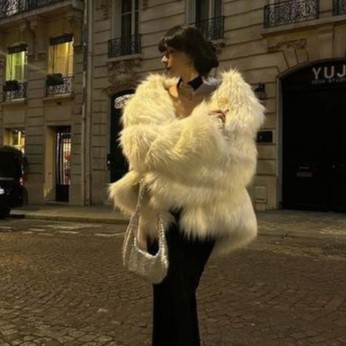

The Mob Wife is a fashion trend inspired by the iconic style of mafia wives, particularly drawn from pop culture and classic films such as The Godfather, Goodfellas, and various other mafia-related stories. This style combines glamour, power, and elegance, with a subtle edge of toughness or danger hidden behind a polished and well-put-together appearance. The trend has caught the attention of the fashion world, focusing on aesthetics that blend sensuality with sophistication, creating a look that is both mysterious and commanding.
Accessories play a key role in the Mob Wife look, adding a layer of wealth and power. Statement jewelry, such as large necklaces, bold earrings, and oversized rings, are common in this style. High-end handbags and standout heels also complete the ensemble, symbolizing status and strength.
. ___________________________________________________________________________________________________________________________________________________________________________________________________________________________________________________________________________________________________________________________________________ .
Hailey Bieber has become one of the key trendsetters in the Mob Wife fashion movement, effortlessly blending elegance with an edgy, powerful aesthetic. Known for her impeccable style, Hailey has been spotted wearing tailored suits, sleek pencil skirts, and bold accessories that channel the iconic "mob wife" look. Her ability to mix structured pieces with feminine touches, such as body-hugging dresses, oversized sunglasses, and dramatic jewelry, has made her a style icon. Hailey's take on this trend often includes modern updates, like pairing classic black blazers with oversized belts or opting for daring red lips, enhancing her powerful, yet glamorous appearance.
The Mob Wife trend has recently surged in popularity, with more people embracing its combination of vintage glamour and modern strength. The core of this trend revolves around tailored suits—often with a sharp, masculine cut—that are balanced by more feminine touches, such as pencil skirts and form-fitting dresses. These outfits evoke an air of authority, with sleek silhouettes and powerful, bold accessories. Statement jewelry, including oversized rings and chunky necklaces, plays a key role, symbolizing wealth and influence.
The trend also embraces daring makeup choices, like bold red lips and smoky eyes, further enhancing the femme fatale appeal. High heels, especially stilettos, are a must-have in completing the look, adding height and confidence. The Mob Wife aesthetic effortlessly blends sophistication with power, making it an enduring trend that has captured the attention of fashion enthusiasts, celebrities, and influencers alike.